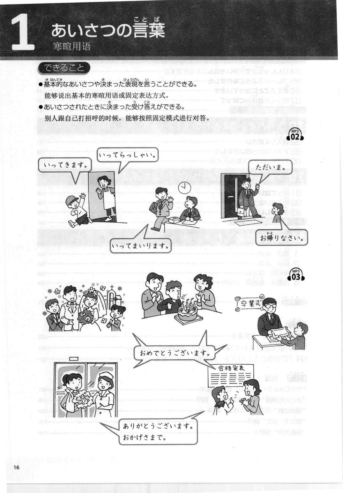
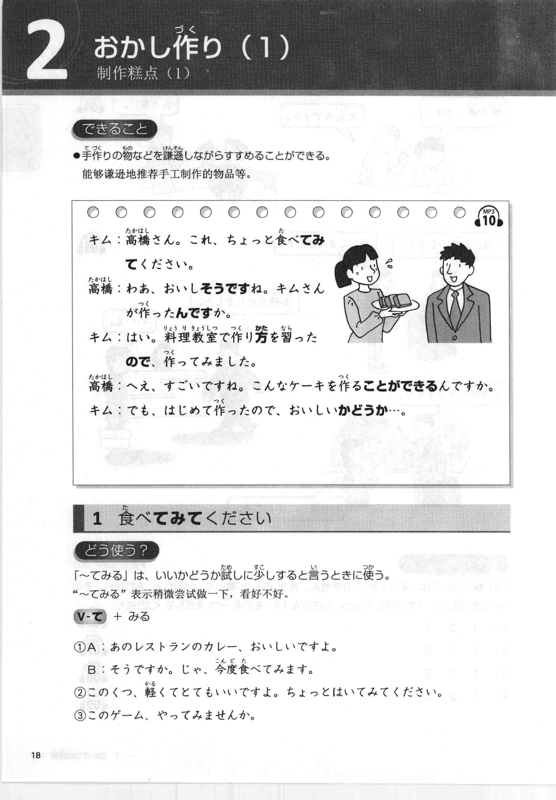

通勤学习
把上班路上的碎片时间，变成一段可以反复开始的日语练习。
当前阶段 · N4 听力恢复期
今天只做一小组音轨
先听，不看文字；再看教材核对；最后跟读。不要追求一次学完，明天从上次停下的地方继续。
本周完成 0 / 5 天
今日流程 · 约 15–25 分钟
通勤时可以只听音频；到家后再补文本和跟读。
1
盲听 Track001–003 不看文字，记住大意
2
看书核对 只记录真正没听出来的词
3
再听并跟读 3 遍 不必每句暂停
4
勾选完成并写一句卡点 为明天留下入口
今天 · 第 1 天：寒暄用语
目标：听懂并能回应日常寒暄。重点表达：いってきます、いってらっしゃい、ただいま、お帰りなさい、おめでとうございます、ありがとうございます。

教材第 16 页 · 对应音频 MP3 02–03
明天 · 第 2 天：〜てみる
目标：理解“试着做……”并能在对话中反应。重点句型：V-て + みる。书上对话还会带出“〜ので”的理由表达，先以听懂和模仿为主。

教材第 18 页 · 对应音频 MP3 10
教材阅读 · TRY! N4
已接入 N4《语法必备》PDF。通勤时先听，方便时打开教材核对；不要为了看完 PDF 而中断听力主线。
N4 音频 · 87 条
音频来自你提供的 N4 音频包。先按顺序使用；课程名称和章节映射，等你验收后再按教材页码细化。
已完成 0 / 87可从上次位置继续
今日记录
备用入口
通勤时优先使用本页音频；如果不想加载本地文件，也可以切换到官方音频平台。